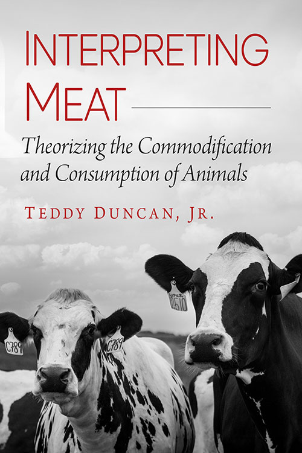

PhD, Texts & Technology
Assistant Professor of English · Valencia College
Scholar · Author · Critic
Teddy Duncan Jr. works at the intersection of Lacanian psychoanalysis, animal studies, and American literature. He is the author of Interpreting Meat (McFarland, 2024) and has a second book, Zoological Lacan, under contract with Routledge. His freelance writing appears in Document Journal, The Observer, Compact Magazine, and elsewhere.

A psychoanalytic and critical theory account of how animals are positioned as commodities within consumer culture, drawing on Lacanian frameworks to interrogate the ideological structures underlying meat production and consumption.
Extends Lacanian theory into animal studies to develop a sustained framework for thinking the boundary between human and animal — and what it means to theorize animality through the symbolic order.
Scholarly Reviews
Conference Presentations
Essays, reviews, and criticism published in: